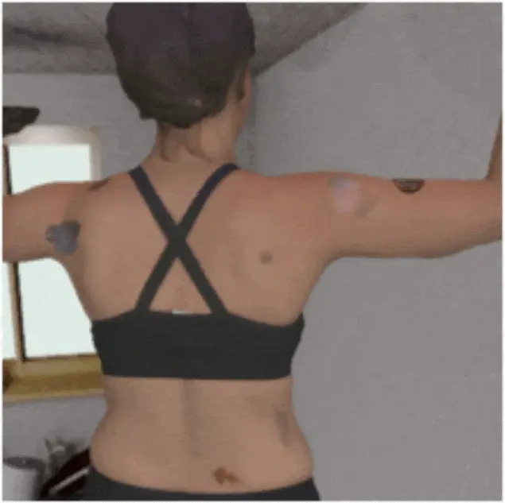
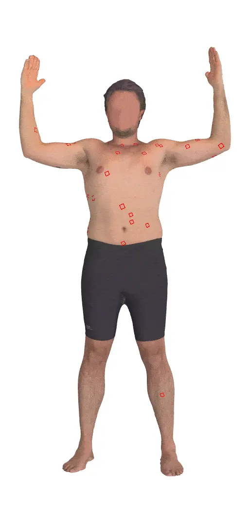
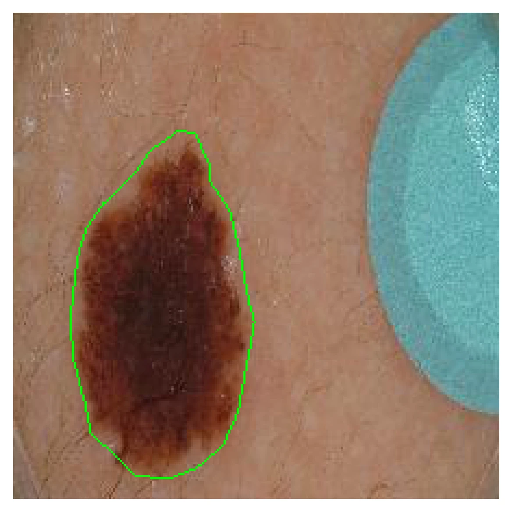
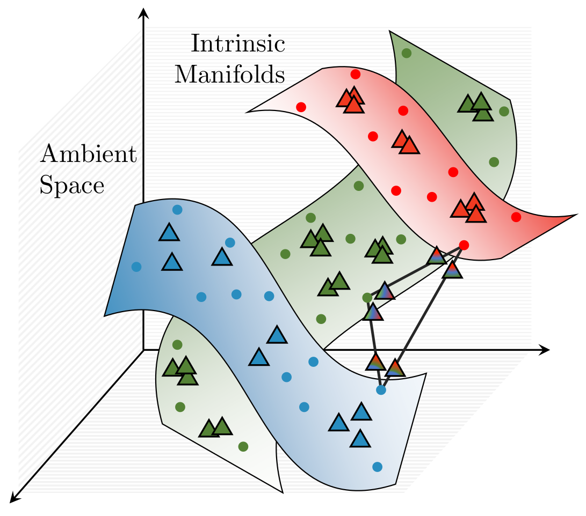
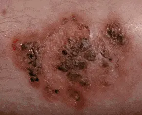
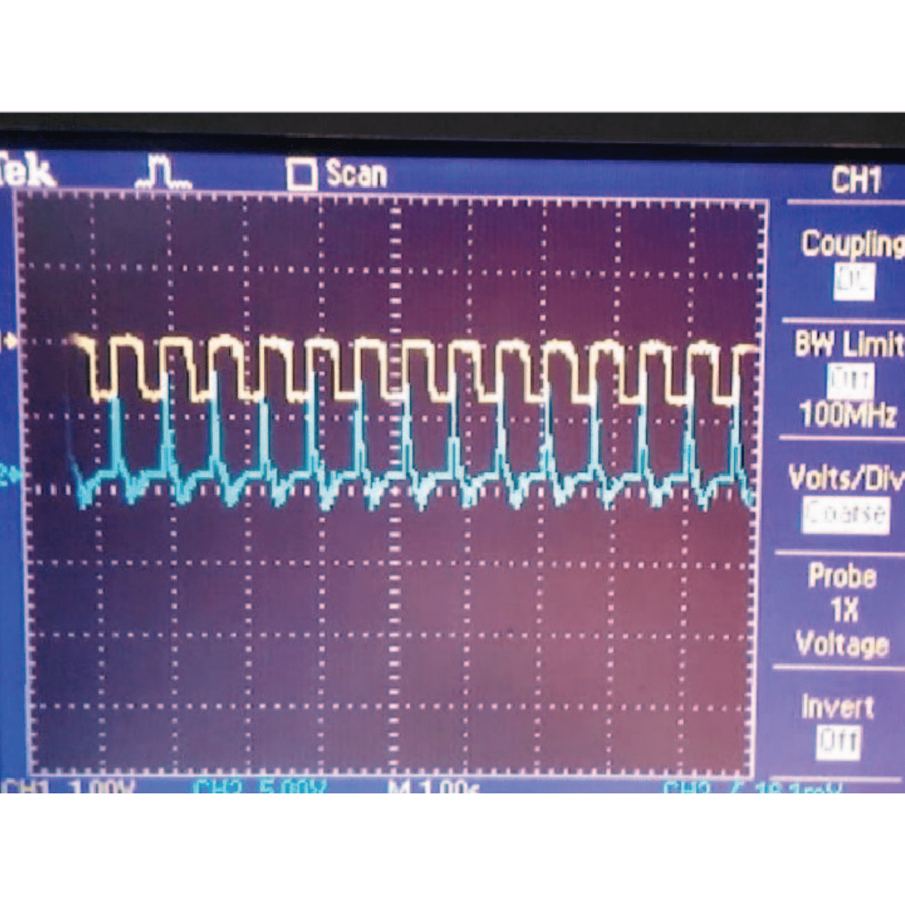
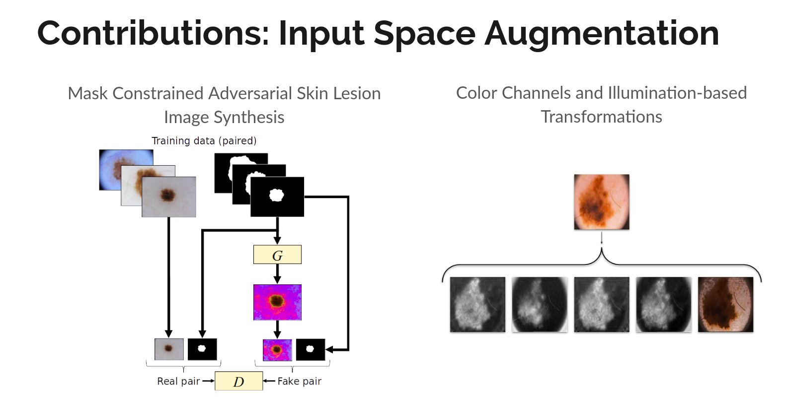

|
Kumar Abhishek
kabhisadasflkjhhe [at] sdfhsdjaffu [dot] 1432@#$2 ca
I am a PhD student in the School of Computing Science at Simon Fraser University, where I work as a part of the Medical Image Analysis Lab (MIAL),
under the supervision of
Prof. Ghassan Hamarneh.
I defended my MSc Thesis in 2020 on input space augmentation strategies for skin lesion segmentation under the supervision of Prof. Ghassan
Hamarneh. My examination committee consisted of Profs. Mark S. Drew, Sandra Avila, and Angel X. Chang,
and my thesis was accepted without any revisions. Previously, I graduated with a Bachelor of Technology in Electronics and Communication Engineering with a focus on Image Processing and Machine Learning from the Indian Institute of
Technology (IIT) Guwahati in 2015. My undergraduate thesis was advised by Prof. Prithwijit Guha.
During my undergraduate years, I carried out internships at LFOVIA, IIT Hyderabad and CTO Office, Wipro. After graduating from IIT Guwahati,
I have worked at Wipro Analytics and Altisource Labs.
Resume |
CV |
Google Scholar |
LinkedIn |
Blog
|
|
|
Research
I'm interested in computer vision, machine learning, and image processing. At MIAL, I work on applying deep learning methods to medical image analysis. The primary focus of my work has been on skin lesion image analysis.
|
|
|
Descriptor: ISIC Archive Multi-Annotator Dermoscopic Skin Lesion Segmentation Dataset (IMA++)

Kumar Abhishek, Jeremy Kawahara, Ghassan Hamarneh
IEEE Data Descriptions, 2026 We curate ISIC MultiAnnot++ (IMA++), a large public multi-annotator dermoscopic skin lesion image segmentation dataset collected from the ISIC Archive. [Abstract] [BibTeX] [Zenodo Datasets]
Multi-annotator medical image segmentation is an important research problem, but requires annotated datasets that are expensive to collect. Dermoscopic skin lesion imaging allows human experts and AI systems to observe morphological structures otherwise not discernable from regular clinical photographs. However, currently there are no large-scale publicly available multi-annotator skin lesion segmentation (SLS) datasets with annotator-labels for dermoscopic skin lesion imaging. We introduce ISIC MultiAnnot++, a large public multi-annotator skin lesion segmentation dataset for images from the ISIC Archive. The final dataset contains 17,684 segmentation masks spanning 14,967 dermoscopic images, where 2,394 dermoscopic images have 2-5 segmentations per image, making it the largest publicly available SLS dataset. Further, metadata about the segmentation, including the annotators' skill level and segmentation tool, is included, enabling research on topics such as annotator-specific preference modeling for segmentation and annotator metadata analysis. We provide an analysis on the characteristics of this dataset, curated data partitions, and consensus segmentation masks.
@article{ieeedata2026isic,
author = {Kumar Abhishek and Jeremy Kawahara and Ghassan Hamarneh},
title = {Descriptor: ISIC Archive Multi-Annotator Dermoscopic Skin Lesion Segmentation Dataset (IMA++)},
journal = {IEEE Data Descriptions},
month = {April},
year = {2026},
volume = {3},
pages = {367--378},
doi = {10.1109/IEEEDATA.2026.3689801},
url = {https://ieeexplore.ieee.org/document/11503173},
}
|
Position Paper |
Ethical Medical Image Synthesis
Weina Jin, Ashish Sinha, Kumar Abhishek, Ghassan Hamarneh
arXiv, 2025 We analyze the ethical challenges associated with medical image synthesis (MISyn) and a framework of practical recommendations to guide ethical development and use of MISyn methods. [Abstract] [BibTeX]
The task of ethical Medical Image Synthesis (MISyn) is to ensure that the MISyn techniques are researched and developed ethically throughout their entire lifecycle, which is essential to prevent the negative impacts of MISyn. To address the ever-increasing needs and requirements for ethical practice of MISyn research and development, we first conduct a theoretical analysis that identifies the key properties of ethical MISyn and intrinsic limits of MISyn. We identify that synthetic images lack inherent grounding in real medical phenomena, cannot fully represent the training medical images, and inevitably introduce new distribution shifts and biases. Ethical risks can arise from not acknowledging the intrinsic limits and weaknesses of synthetic images compared to medical images, with the extreme form manifested as misinformation of MISyn that substitutes synthetic images for medical images without acknowledgment. The resulting ethical harms include eroding trust in the medical imaging dataset environment and causing algorithmic discrimination towards stakeholders and the public. To facilitate collective efforts towards ethical MISyn within and outside the medical image analysis community, we then propose practical supports for ethical practice in MISyn based on the theoretical analysis, including ethical practice recommendations that adapt the existing technical standards, problem formulation, design, and evaluation practice of MISyn to the ethical challenges; and oversight recommendations to facilitate checks and balances from stakeholders and the public. We also present two case studies that demonstrate how to apply the ethical practice recommendations in practice, and identify gaps between existing practice and the ethical practice recommendations.
@article{arxiv2025ethical,
author = {Weina Jin and Ashish Sinha and Kumar Abhishek and Ghassan Hamarneh},
title = {Ethical Medical Image Synthesis},
journal = {arXiv},
month = {August},
year = {2025},
pages = {1--62},
url = {https://www.arxiv.org/abs/2508.09293},
}
|
Analysis Paper |
Investigating the Quality of DermaMNIST and Fitzpatrick17k Dermatological Image Datasets
Kumar Abhishek, Aditi Jain, Ghassan Hamarneh
Nature Scientific Data, 2025
(People's Choice Award at the 2025 SFU CS Diversity Awards)
We present an in-depth analysis of two popular dermatological image datasets, DermaMNIST and Fitzpatrick17k, uncovering data quality issues: duplicates, data leakage across train-test partitions, mislabeled images, and the absence of a well-defined test partition. [Abstract] [BibTeX] [Project Website] [Zenodo Datasets] [Presentation Slides]
The remarkable progress of deep learning in dermatological tasks has brought us closer to achieving diagnostic accuracies comparable to those of human experts. However, while large datasets play a crucial role in the development of reliable deep neural network models, the quality of data therein and their correct usage are of paramount importance. Several factors can impact data quality, such as the presence of duplicates, data leakage across train-test partitions, mislabeled images, and the absence of a well-defined test partition. In this paper, we conduct meticulous analyses of two popular dermatological image datasets: DermaMNIST and Fitzpatrick17k, uncovering these data quality issues, measure the effects of these problems on the benchmark results, and propose corrections to the datasets. Besides ensuring the reproducibility of our analysis, by making our analysis pipeline and the accompanying code publicly available, we aim to encourage similar explorations and to facilitate the identification and addressing of potential data quality issues in other large datasets.
@article{scidata2025investigating,
author = {Kumar Abhishek and Aditi Jain and Ghassan Hamarneh},
title = {Investigating the Quality of {DermaMNIST} and {Fitzpatrick17k} Dermatological Image Datasets},
journal = {Nature -- Scientific Data},
month = {},
year = {2025},
volume = {12},
number = {196},
issue = {1},
pages = {1--21},
doi = {10.1038/s41597-025-04382-5},
url = {https://www.nature.com/articles/s41597-025-04382-5},
}
|
 |
DermSynth3D: Synthesis of in-the-wild Annotated Dermatology Images
Ashish Sinha*, Jeremy Kawahara*, Arezou Pakzad*, Kumar Abhishek, Matthieu Ruthven, Enjie Ghorbel, Anis Kacem, Djamila Aouada, Ghassan Hamarneh [*: Joint first authors]
Medical Image Analysis, 2024 We propose a framework to synthesize in-the-wild 2D clinical images of skin diseases and provide corresponding annotations for several downstream tasks. [Abstract] [BibTeX] [Presentation Video] [Poster]
In recent years, deep learning (DL) has shown great potential in the field of dermatological image analysis. However, existing datasets in this domain have significant limitations, including a small number of image samples, limited disease conditions, insufficient annotations, and non-standardized image acquisitions. To address these shortcomings, we propose a novel framework called DermSynth3D. DermSynth3D blends skin disease patterns onto 3D textured meshes of human subjects using a differentiable renderer and generates 2D images from various camera viewpoints under chosen lighting conditions in diverse background scenes. Our method adheres to top-down rules that constrain the blending and rendering process to create 2D images with skin conditions that mimic in-the-wild acquisitions, ensuring more meaningful results. The framework generates photo-realistic 2D dermoscopy images and the corresponding dense annotations for semantic segmentation of the skin, skin conditions, body parts, bounding boxes around lesions, depth maps, and other 3D scene parameters, such as camera position and lighting conditions. DermSynth3D allows for the creation of custom datasets for various dermatology tasks. We demonstrate the effectiveness of data generated using DermSynth3D by training DL models on synthetic data and evaluating them on various dermatology tasks using real 2D dermatological images. We make our code publicly available on GitHub.
@article{media2024dermsynth3d,
author = {Ashish Sinha and Jeremy Kawahara and Arezou Pakzad and Kumar Abhishek and Matthieu Ruthven and Enjie Ghorbel and Anis Kacem and Djamila Aouada and Ghassan Hamarneh},
title = {{DermSynth3D}: Synthesis of in-the-wild annotated dermatology images},
journal = {Medical Image Analysis},
month = {July},
year = {2024},
volume = {95},
number = {103145},
pages = {1--18},
doi = {10.1016/j.media.2024.103145},
url = {https://www.sciencedirect.com/science/article/abs/pii/S1361841524000707},
pmid = {38615432},
}
|
|
|
Multi-Sample ζ-mixup: Richer, More Realistic Synthetic Samples from a p-Series Interpolant
Kumar Abhishek, Colin J. Brown, Ghassan Hamarneh
Journal of Big Data, 2024 We propose a generalization of mixup with provably and demonstrably desirable properties that allows convex combinations of more than 2 samples. [Abstract] [BibTeX]
Modern deep learning training procedures rely on model regularization techniques such as data augmentation methods, which generate training samples that increase the diversity of data and richness of label information. A popular recent method, mixup, uses convex combinations of pairs of original samples to generate new samples. However, as we show in our experiments, mixup can produce undesirable synthetic samples, where the data is sampled off the manifold and can contain incorrect labels. We propose ζ-mixup, a generalization of mixup with provably and demonstrably desirable properties that allows convex combinationsof T ≥ 2 samples, leading to more realistic and diverse outputs that incorporate information from T original samples by using a p-series interpolant. We show that, compared to mixup, ζ-mixup better preserves the intrinsic dimensionality of the original datasets, which is a desirable property for training generalizable models. Furthermore, we show that our implementation of ζ-mixup is faster than mixup, and extensive evaluation on controlled synthetic and 26 diverse real-world natural and medical image classification datasets shows that ζ-mixup outperforms mixup, CutMix, and traditional data augmentation techniques.
@article{jbd2024zeta,
author = {Kumar Abhishek and Colin J. Brown and Ghassan Hamarneh},
title = {Multi-Sample $\zeta$-mixup: Richer, More Realistic Synthetic Samples from a $p$-Series Interpolant},
journal = {Journal of Big Data},
month = {March},
year = {2024},
volume = {11},
number = {43},
pages = {1--41},
doi = {10.1186/s40537-024-00898-6},
url = {https://journalofbigdata.springeropen.com/articles/10.1186/s40537-024-00898-6},
pmid = {38528850},
}
|
Review
Paper |
A Survey on Deep Learning for Skin Lesion Segmentation
Kumar Abhishek*, Zahra Mirikharaji*, Alceu Bissoto, Catarina Barata, Sandra Avila, Eduardo Valle, M. Emre Celebi, Ghassan Hamarneh [*: Joint first authors]
Medical Image Analysis, 2023 We review the literature on deep learning-based skin lesion segmentation, evaluating the current research along several dimensions: input data, model design, and evaluation, and discuss their limitations and potential research directions. [Abstract] [BibTeX] [Interactive Table of Papers]
Skin cancer is a major public health problem that could benefit from computer-aided diagnosis to reduce the burden of this common disease. Skin lesion segmentation from images is an important step toward achieving this goal. However, the presence ofnatural and artificial artifacts (e.g., hair and air bubbles), intrinsic factors (e.g., lesion shape and contrast), and variations in image acquisition conditions make skin lesion segmentation a challenging task. Recently, various researchers have explored the applicability of deep learning models to skin lesion segmentation. In this survey, we cross-examine 177 research papers that deal with deep learning-based segmentation of skin lesions. We analyze these works along several dimensions, including input data (datasets, preprocessing, and synthetic data generation), model design (architecture, modules, and losses), and evaluation aspects (data annotation requirements and segmentation performance). We discuss these dimensions both from the viewpoint of select seminal works, and from a systematic viewpoint, examining how those choices have influenced current trends, and how their limitations should be addressed. To facilitate comparisons, we summarize all examined works in a comprehensive table as well as an interactive table available online.
@article{media2023survey,
author = {Zahra Mirikharaji and Kumar Abhishek and Alceu Bissoto and Catarina Barata and Sandra Avila and Eduardo Valle and M. Emre Celebi and Ghassan Hamarneh},
title = {A Survey on Deep Learning for Skin Lesion Segmentation},
journal = {Medical Image Analysis},
month = {August},
year = {2023},
volume = {88},
number = {102863},
pages = {1--40},
doi = {10.1016/j.media.2023.102863},
url = {https://www.sciencedirect.com/science/article/abs/pii/S1361841523001238},
pmid = {37343323},
}
|
 |
Skin3D: Detection and Longitudinal Tracking of Pigmented Skin Lesions in 3D Total-Body Textured Meshes
Mengliu Zhao*, Jeremy Kawahara*, Kumar Abhishek, Sajjad Shamanian, Ghassan Hamarneh [*: Joint first authors]
Medical Image Analysis, 2022 We present a deep learning-based approach to detect and track skin lesions on 3D whole-body scans. [Abstract] [BibTeX] [Presentation Video]
We present an automated approach to detect and longitudinally track skin lesions on 3D total-body skin surfaces scans. The acquired 3D mesh of the subject is unwrapped to a 2D texture image, where a trained region convolutional neural network (R-CNN) localizes the lesions within the 2D domain. These detected skin lesions are mapped back to the 3D surface of the subject and, for subjects imaged multiple times, the anatomical correspondences among pairs of meshes and the geodesic distances among lesions are leveraged in our longitudinal lesion tracking algorithm.We evaluated the proposed approach using three sources of data. Firstly, we augmented the 3D meshes of human subjects from the public FAUST dataset with a variety of poses, textures, and images of lesions. Secondly, using a handheld structured light 3D scanner, we imaged a mannequin with multiple synthetic skin lesions at selected location and with varying shapes, sizes, and colours. Finally, we used 3DBodyTex, a publicly available dataset composed of 3D scans imaging the colored (textured) skin of 200 human subjects. We manually annotated locations that appeared to the human eye to contain a pigmented skin lesion as well as tracked a subset of lesions occurring on the same subject imaged in different poses. Our results, on test subjects annotated by three human annotators, suggest that the trained R-CNN detects lesions at a similar performance level as the human annotators. Our lesion tracking algorithm achieves an average accuracy of 80% when identifying corresponding pairs of lesions across subjects imaged in different poses. As there currently is no other large-scale publicly available dataset of 3D total-body skin lesions, we publicly release the 10 mannequin meshes and over 25,000 3DBodyTex manual annotations, which we hope will further research on total-body skin lesion analysis.
@article{media2022skin3d,
author = {Mengliu Zhao and Jeremy Kawahara and Kumar Abhishek and Sajjad Shamanian and Ghassan Hamarneh},
title = {{Skin3D}: Detection and Longitudinal Tracking of Pigmented Skin Lesions in {3D} Total-Body Textured Meshes},
journal = {Medical Image Analysis},
month = {April},
year = {2022},
volume = {77},
number = {102329},
pages = {1--10},
doi = {10.1016/j.media.2021.102329},
url = {https://www.sciencedirect.com/science/article/abs/pii/S1361841521003741},
pmid = {35144199},
}
|
|
|
Predicting the Clinical Management of Skin Lesions using Deep Learning
Kumar Abhishek, Jeremy Kawahara, Ghassan Hamarneh
Nature Scientific Reports, 2021 We present a deep learning-based approach to predict the clinical management decisions for skin lesions from images without explicitly predicting the underlying diagnosis. [Abstract] [BibTeX]
Media Coverage:
Massive Science , The Wire Science
Automated machine learning approaches to skin lesion diagnosis from images are approaching dermatologist-level performance. However, current machine learning approaches that suggest management decisions rely on predicting the underlying skin condition to infer a management decision without considering the variability of management decisions that may exist within a single condition. We present the first work to explore image-based prediction of clinical management decisions directly without explicitly predicting the diagnosis. In particular, we use clinical and dermoscopic images of skin lesions along with patient metadata from the Interactive Atlas of Dermoscopy dataset (1,011 cases; 20 disease labels; 3 management decisions) and demonstrate that predicting management labels directly is more accurate than predicting the diagnosis and then inferring the management decision (13.73 ± 3.93% and 6.59 ± 2.86% improvement in overall accuracy and AUROC respectively), statistically significant at p < 0.001. Directly predicting management decisions also considerably reduces the over-excision rate as compared to management decisions inferred from diagnosis predictions (24.56% fewer cases wrongly predicted to be excised). Furthermore, we show that training a model to also simultaneously predict the seven-point criteria and the diagnosis of skin lesions yields an even higher accuracy (improvements of 4.68 ± 1.89% and 2.24 ± 2.04% in overall accuracy and AUROC respectively) of management predictions. Finally, we demonstrate our model's generalizability by evaluating on the publicly available MClass-D dataset and show that our model agrees with the clinical management recommendations of 157 dermatologists as much as they agree amongst each other.
@article{natscirep2021predicting,
author = {Kumar Abhishek and Jeremy Kawahara and Ghassan Hamarneh},
title = {Predicting the Clinical Management of Skin Lesions using Deep Learning},
journal = {Nature -- Scientific Reports},
month = {April},
year = {2021},
volume = {11},
number = {7769},
pages = {1--14},
doi = {10.1038/s41598-021-87064-7},
url = {https://www.nature.com/articles/s41598-021-87064-7},
pmid = {33833293},
pmcid = {PMC8032721},
}
|
Review
Paper |
Deep Semantic Segmentation of Natural and Medical Images: A Review
Kumar Abhishek*, Saeid Asgari Taghanaki*, Joseph Paul Cohen, Julien Cohen-Adad, Ghassan Hamarneh [*: Joint first authors]
Artificial Intelligence Review, 2021 We present a comprehensive survey of advances in deep learning-based semantic segmentation of natural and medical images, categorizing the contributions in 6 broad categories, and discuss limitations and potential research directions. [Abstract] [BibTeX] [Poster]
The semantic image segmentation task consists of classifying each pixel of an image into an instance, where each instance corresponds to a class. This task is a part of the concept of scene understanding or better explaining the global context of an image. In the medical image analysis domain, image segmentation can be used for image-guided interventions, radiotherapy, or improved radiological diagnostics. In this review, we categorize the leading deep learning-based medical and non-medical image segmentation solutions into six main groups of deep architectural, data synthesis-based, loss function-based, sequenced models, weakly supervised, and multi-task methods and provide a comprehensive review of the contributions in each of these groups. Further, for each group, we analyze each variant of these groups and discuss the limitations of the current approaches and present potential future research directions for semantic image segmentation.
@article{aire2021deep,
author = {Saeid Asgari Taghanaki and Kumar Abhishek and Joseph Paul Cohen and Julien Cohen-Adad and Ghassan Hamarneh},
title = {Deep Semantic Segmentation of Natural and Medical Images: A Review},
journal = {Artificial Intelligence Review},
month = {April},
year = {2021},
volume = {54},
number = {1},
pages = {137--178},
doi = {10.1007/s10462-020-09854-1},
url = {https://link.springer.com/article/10.1007/s10462-020-09854-1},
}
|
Review
Paper |
Artificial Intelligence In Glioma Imaging: Challenges and Advances
Weina Jin, Mostafa Fatehi, Kumar Abhishek, Mayur Mallya, Brian Toyota, Ghassan Hamarneh
Journal of Neural Engineering, 2020 We review the literature to analyze the most important challenges in the clinical adoption of AI-based methods and present a summary of the recent advances, categorizing them into three broad categories: dealing with limited data volume and annotations, training of deep learning-based models, and the clinical deployment of these models. [Abstract] [BibTeX]
Primary brain tumors including gliomas continue to pose significant management challenges to clinicians. While the presentation, the pathology, and the clinical course of these lesions are variable, the initial investigations are usually similar. Patients who are suspected to have a brain tumor will be assessed with computed tomography (CT) and magnetic resonance imaging (MRI). The imaging findings are used by neurosurgeons to determine the feasibility of surgical resection and plan such an undertaking. Imaging studies are also an indispensable tool in tracking tumor progression or its response to treatment. As these imaging studies are non-invasive, relatively cheap and accessible to patients, there have been many efforts over the past two decades to increase the amount of clinically-relevant information that can be extracted from brain imaging. Most recently, artificial intelligence (AI) techniques have been employed to segment and characterize brain tumors, as well as to detect progression or treatment-response. However, the clinical utility of such endeavours remains limited due to challenges in data collection and annotation, model training, and the reliability of AI-generated information.
We provide a review of recent advances in addressing the above challenges. First, to overcome the challenge of data paucity, different image imputation and synthesis techniques along with annotation collection efforts are summarized. Next, various training strategies are presented to meet multiple desiderata, such as model performance, generalization ability, data privacy protection, and learning with sparse annotations. Finally, standardized performance evaluation and model interpretability methods have been reviewed. We believe that these technical approaches will facilitate the development of a fully-functional AI tool in the clinical care of patients with gliomas.
@article{jne2020artificial,
author = {Weina Jin and Mostafa Fatehi and Kumar Abhishek and Mayur Mallya and Brian Toyota and Ghassan Hamarneh},
title = {Artificial Intelligence in Glioma Imaging: Challenges and Advances},
journal = {Journal of Neural Engineering},
month = {April},
year = {2020},
volume = {17},
number = {2},
pages = {021002},
doi = {10.1088/1741-2552/ab8131},
url = {https://www.nature.com/articles/s41598-021-87064-7},
pmid = {32191935},
}
|
|
|
What Can We Learn from Inter-Annotator Variability in Skin Lesion Segmentation?
Kumar Abhishek, Jeremy Kawahara, Ghassan Hamarneh
Medical Image Computing and Computer-Assisted Intervention (MICCAI) ISIC Skin Image Analysis Workshop (MICCAI ISIC), 2025
(Best Paper Award | SFU FAS 3MT Runner-Up | SFU 3MT Finalist | Invited 3MT at University Women's Club of Vancouver)
We show a statistically significant association between inter-annotator agreement (IAA) and the malignancy of skin lesions, and leverage this association to improve lesion diagnosis performance. [Abstract] [BibTeX] [Presentation Slides]
Medical image segmentation exhibits intra- and inter-annotator variability due to ambiguous object boundaries, annotator preferences, expertise, and tools, among other factors. Lesions with ambiguous boundaries, e.g., spiculated or infiltrative nodules, or irregular borders per the ABCD rule, are particularly prone to disagreement and are often associated with malignancy. In this work, we curate IMA++, the largest multi-annotator skin lesion segmentation dataset, on which we conduct an in-depth study of variability due to annotator, malignancy, tool, and skill factors. We find a statistically significant (p < 0.001) association between inter-annotator agreement (IAA), measured using Dice, and the malignancy of skin lesions. We further show that IAA can be accurately predicted directly from dermoscopic images, achieving a mean absolute error of 0.108. Finally, we leverage this association by utilizing IAA as a “soft” clinical feature within a multi-task learning objective, yielding a 4.2% improvement in balanced accuracy averaged across multiple model architectures and across IMA++ and four public dermoscopic datasets. The code is available on GitHub.
@inproceedings{isic2025what,
author = {Kumar Abhishek and Jeremy Kawahara and Ghassan Hamarneh},
title = {What Can We Learn from Inter-Annotator Variability in Skin Lesion Segmentation?},
booktitle = {Medical Image Computing and Computer-Assisted Intervention (MICCAI) ISIC Skin Image Analysis Workshop (MICCAI ISIC)},
month = {September},
year = {2025},
volume = {16149},
pages = {23--33},
doi = {10.1007/978-3-032-05825-6_3},
url = https://link.springer.com/chapter/10.1007/978-3-032-05825-6_3},
}
|
|
|
Disentangled PET Lesion Segmentation
Tanya Gatsak, Kumar Abhishek, Hanene Ben Yedder, Saeid Asgari Taghanaki, Ghassan Hamarneh
International Symposium on Biomedical Imaging (IEEE ISBI), 2025
(Best Paper Award)
We present a 3D disentanglement method for PET lesion segmentation that separates disease and healthy anatomical features and employs losses for segmentation, reconstruction, and healthy component plausibility. [Abstract] [BibTeX] [Presentation Slides]
PET imaging is an invaluable tool in clinical settings as it captures the functional activity of both healthy anatomy and cancerous lesions. Developing automatic lesion segmentation methods for PET images is crucial since manual lesion segmentation is laborious and prone to inter- and intra-observer variability. We propose PET-Disentangler, a 3D disentanglement method that uses a 3D UNet-like encoder-decoder architecture to disentangle disease and normal healthy anatomical features with losses for segmentation, reconstruction, and healthy component plausibility. A critic network is used to encourage the healthy latent features to match the distribution of healthy samples and thus encourages these features to not contain any lesion-related features. Our quantitative results show that PET-Disentangler is less prone to incorrectly declaring healthy and high tracer uptake regions as cancerous lesions, since such uptake pattern would be assigned to the disentangled healthy component. Our code is available on GitHub.
@inproceedings{isic2024segmentation,
author = {Tanya Gatsak and Kumar Abhishek and Hanene Ben Yedder and Saeid Asgari Taghanaki and Ghassan Hamarneh},
title = {Disentangled PET Lesion Segmentation},
booktitle = {IEEE International Symposium on Biomedical Imaging (IEEE ISBI)},
month = {April},
year = {2025},
pages = {1--4},
doi = {10.1109/ISBI60581.2025.10981186},
url = https://ieeexplore.ieee.org/document/10981186},
}
|
|
|
Lesion Elevation Prediction from Skin Images Improves Diagnosis
Kumar Abhishek, Ghassan Hamarneh
Medical Image Computing and Computer-Assisted Intervention (MICCAI) ISIC Skin Image Analysis Workshop (MICCAI ISIC), 2024 We explore the feasibility of predicting and leveraging skin lesion elevation labels from 2D skin lesion images, and show that incorporating elevation labels as auxiliary inputs to diagnosis models improves the classification performance. [Abstract] [BibTeX] [Presentation Slides]
While deep learning-based computer-aided diagnosis for skin lesion image analysis is approaching dermatologists’ performance levels, there are several works showing that incorporating additional features such as shape priors, texture, color constancy, and illumination further improves the lesion diagnosis performance. In this work, we look at another clinically useful feature, skin lesion elevation, and investigate the feasibility of predicting and leveraging skin lesion elevation labels. Specifically, we use a deep learning model to predict image-level lesion elevation labels from 2D skin lesion images. We test the elevation prediction accuracy on the derm7pt dataset, and use the elevation prediction model to estimate elevation labels for images from five other datasets: ISIC 2016, 2017, and 2018 Challenge datasets, MSK, and DermoFit. We evaluate cross-domain generalization by using these estimated elevation labels as auxiliary inputs to diagnosis models, and show that these improve the classification performance, with AUROC improvements of up to 6.29% and 2.69% for dermoscopic and clinical images, respectively. The code is publicly available on GitHub.
@inproceedings{isic2024segmentation,
author = {Kumar Abhishek and Ghassan Hamarneh},
title = {Lesion Elevation Prediction from Skin Images Improves Diagnosis},
booktitle = {Medical Image Computing and Computer-Assisted Intervention (MICCAI) ISIC Skin Image Analysis Workshop (MICCAI ISIC)},
month = {January},
year = {2025},
volume = {15274},
pages = {45--55},
doi = {10.1007/978-3-031-77610-6_5},
url = https://link.springer.com/chapter/10.1007/978-3-031-77610-6_5},
}
|
 |
Segmentation Style Discovery: Application to Skin Lesion Images
Kumar Abhishek, Jeremy Kawahara, Ghassan Hamarneh
Medical Image Computing and Computer-Assisted Intervention (MICCAI) ISIC Skin Image Analysis Workshop (MICCAI ISIC), 2024
(Best Paper Award)
StyleSeg learns plausible, diverse, and semantically consistent segmentation styles without annotator correspondence, outperforming competing methods while maintaining alignment with annotator preferences. [Abstract] [BibTeX] [Presentation Slides]
Variability in medical image segmentation, arising from annotator preferences, expertise, and their choice of tools, has been well documented. While the majority of multi-annotator segmentation approaches focus on modeling annotator-specific preferences, they require annotator-segmentation correspondence. In this work, we introduce the problem of segmentation style discovery, and propose StyleSeg, a segmentation method that learns plausible, diverse, and semantically consistent segmentation styles from a corpus of image-mask pairs without any knowledge of annotator correspondence. StyleSeg consistently outperforms competing methods on four publicly available skin lesion segmentation (SLS) datasets. We also curate ISIC-MultiAnnot, the largest multi-annotator SLS dataset with annotator correspondence, and our results show a strong alignment, using our newly proposed measure AS2, between the predicted styles and annotator preferences. The code and the dataset are available on GitHub.
@inproceedings{isic2024segmentation,
author = {Kumar Abhishek and Jeremy Kawahara and Ghassan Hamarneh},
title = {Segmentation Style Discovery: Application to Skin Lesion Images},
booktitle = {Medical Image Computing and Computer-Assisted Intervention (MICCAI) ISIC Skin Image Analysis Workshop (MICCAI ISIC)},
month = {January},
year = {2025},
volume = {15274},
pages = {24--34},
doi = {10.1007/978-3-031-77610-6_3},
url = {https://link.springer.com/chapter/10.1007/978-3-031-77610-6_3},
}
|
|
|
PET-Disentangler: PET Lesion Segmentation via Disentangled Healthy and Disease Feature Representations
Tanya Gatsak, Kumar Abhishek, Hanene Ben Yedder, Saeid Asgari Taghanaki, Ghassan Hamarneh
The Society of Nuclear Medicine and Molecular Imaging (SNMMI) Annual Meeting, 2024 We propose PET-Disentangler, a deep learning method that disentangles PET images into disease and healthy anatomical features to improve lesion segmentation accuracy and outperforms standard 3D UNet models. [Abstract] [BibTeX] [Poster]
Data augmentation (DA), an effective regularization technique, generates training samples to enhance the diversity of data and the richness of label information for training modern deep learning models. mixup, a popular recent DA method, augments training datasets with convex combinations of original samples pairs, but can generate undesirable samples, with data being sampled off the manifold and with incorrect labels. In this work, we propose ζ-mixup, a generalization of mixup with provably and demonstrably desirable properties that allows for convex combinations of N ≥ 2 samples, thus leading to more realistic and diverse outputs that incorporate information from N original samples using a p-series interpolant. We show that, compared to mixup, ζ-mixup better preserves the intrinsic dimensionality of the original datasets, a desirable property for training generalizable models, and is at least as fast as mixup. Evaluation on several natural and medical image datasets shows that ζ-mixup outperforms mixup, CutMix, and traditional DA methods.
@inproceedings{snmmi2024,
author = {Tanya Gatsak and Kumar Abhishek and Hanene Ben Yedder and Saeid Asgari Taghanaki and Ghassan Hamarneh},
title = {PET-Disentangler: PET Lesion Segmentation via Disentangled Healthy and Disease Feature Representations},
booktitle = {The Society of Nuclear Medicine and Molecular Imaging (SNMMI) Annual Meeting},
month = {June},
year = {2024},
pages = {1--1},
url = {https://jnm.snmjournals.org/content/65/supplement_2/242461},
}
|
 |
ζ-mixup: Richer, More Realistic Mixing of Multiple Images
Kumar Abhishek, Colin J. Brown, Ghassan Hamarneh
Medical Imaging with Deep Learning (MIDL) Short Paper, 2023 We present a multi-sample Riemann zeta-weighted mixing-based image augmentation to generate richer and more realistic outputs. [Abstract] [BibTeX] [Presentation Slides] [Poster]
Data augmentation (DA), an effective regularization technique, generates training samples to enhance the diversity of data and the richness of label information for training modern deep learning models. mixup, a popular recent DA method, augments training datasets with convex combinations of original samples pairs, but can generate undesirable samples, with data being sampled off the manifold and with incorrect labels. In this work, we propose ζ-mixup, a generalization of mixup with provably and demonstrably desirable properties that allows for convex combinations of N ≥ 2 samples, thus leading to more realistic and diverse outputs that incorporate information from N original samples using a p-series interpolant. We show that, compared to mixup, ζ-mixup better preserves the intrinsic dimensionality of the original datasets, a desirable property for training generalizable models, and is at least as fast as mixup. Evaluation on several natural and medical image datasets shows that ζ-mixup outperforms mixup, CutMix, and traditional DA methods.
@inproceedings{midl2023zeta,
author = {Kumar Abhishek and Colin J. Brown and Ghassan Hamarneh},
title = {${\textbackslash}zeta$-mixup: Richer, More Realistic Mixing of Multiple Images},
booktitle = {Medical Imaging with Deep Learning (MIDL)},
month = {July},
year = {2023},
pages = {1--5},
url = {https://openreview.net/forum?id=iXjsAarmqn},
}
|
 |
CIRCLe: Color Invariant Representation Learning for Unbiased Classification of Skin Lesions
Arezou Pakzad, Kumar Abhishek, Ghassan Hamarneh
ISIC Skin Image Analysis Workshop, European Conference on Computer Vision (ECCV), 2022 We propose a skin color transformer, a domain invariant representation learning method, and a new fairness metric for mitigating skin type bias in clinical image classification. [Abstract] [BibTeX] [Presentation Slides]
While deep learning based approaches have demonstrated expert-level performance in dermatological diagnosis tasks, they have also been shown to exhibit biases toward certain demographic attributes, particularly skin types (e.g., light versus dark), a fairness concern that must be addressed. We propose CIRCLe, a skin color invariant deep representation learning method for improving fairness in skin lesion classification. CIRCLe is trained to classify images by utilizing a regularization loss that encourages images with the same diagnosis but different skin types to have similar latent representations. Through extensive evaluation and ablation studies, we demonstrate CIRCLe's superior performance over the state-of-the-art when evaluated on 16k+ images spanning 6 Fitzpatrick skin types and 114 diseases, using classification accuracy, equal opportunity difference (for light versus dark groups), and normalized accuracy range, a new measure we propose to assess fairness on multiple skin type groups.
@inproceedings{isic2022circle,
author = {Arezou Pakzad and Kumar Abhishek and Ghassan Hamarneh},
title = {{CIRCLe}: Color Invariant Representation Learning for Unbiased Classification of Skin Lesions},
booktitle = {European Conference on Computer Vision (ECCV) ISIC Skin Image Analysis Workshop (ECCV ISIC)},
month = {February},
year = {2023},
volume = {13804},
pages = {203--219},
doi = {10.1007/978-3-031-25069-9_14},
url = {https://link.springer.com/chapter/10.1007/978-3-031-25069-9_14},
}
|
|
|
D-LEMA: Deep Learning Ensembles from Multiple Annotations -- Application to Skin Lesion Segmentation
Zahra Mirikharaji, Kumar Abhishek, Saeed Izadi, Ghassan Hamarneh
ISIC Skin Image Analysis Workshop, IEEE International Conference on Computer Vision and Pattern Recognition (CVPR), 2021
(Best Paper Award)
We propose an ensemble of Bayesian FCNs to perform segmentation from multiple (contradictory) annotations and fuse predictions from multiple base models to improve confidence calibration. [Abstract] [BibTeX] [Presentation Slides]
Medical image segmentation annotations suffer from inter/intra-observer variations even among experts due to intrinsic differences in human annotators and ambiguous boundaries. Leveraging a collection of annotators' opinions for an image is an interesting way of estimating a gold standard. Although training deep models in a supervised setting with a single annotation per image has been extensively studied, generalizing their training to work with data sets containing multiple annotations per image remains a fairly unexplored problem. In this paper, we propose an approach to handle annotators' disagreements when training a deep model. To this end, we propose an ensemble of Bayesian fully convolutional networks (FCNs) for the segmentation task by considering two major factors in the aggregation of multiple ground truth annotations: (1) handling contradictory annotations in the training data originating from inter-annotator disagreements and (2) improving confidence calibration through the fusion of base models predictions. We demonstrate the superior performance of our approach on the ISIC Archive and explore the generalization performance of our proposed method by cross-dataset evaluation on the PH2 and DermoFit data sets.
@inproceedings{isic2021dlema,
author = {Zahra Mirikharaji and Kumar Abhishek and Saeed Izadi and Ghassan Hamarneh},
title = {{D-LEMA}: Deep Learning Ensembles from Multiple Annotations -- Application to Skin Lesion Segmentation},
booktitle = {IEEE Computer Vision and Pattern Recognition (IEEE CVPR) ISIC Skin Image Analysis Workshop (CVPR ISIC)},
month = {September},
year = {2021},
pages = {1837--1846},
doi = {10.1109/CVPRW53098.2021.00203},
url = {https://ieeexplore.ieee.org/abstract/document/9523011},
}
|
|
|
Matthews Correlation Coefficient Loss for Deep Convolutional Networks: Application to Skin Lesion Segmentation
Kumar Abhishek, Ghassan Hamarneh
International Symposium on Biomedical Imaging (ISBI), 2021 We propose a new overlap-based loss function for binary segmentation that takes into account the true negative pixels and achieves a better sensitivity-specificity trade-off than the popular Dice loss. [Abstract] [BibTeX] [Poster]
The segmentation of skin lesions is a crucial task in clinical decision support systems for the computer aided diagnosis of skin lesions. Although deep learning-based approaches have improved segmentation performance, these models are often susceptible to class imbalance in the data, particularly, the fraction of the image occupied by the background healthy skin. Despite variations of the popular Dice loss function being proposed to tackle the class imbalance problem, the Dice loss formulation does not penalize misclassifications of the background pixels. We propose a novel metric-based loss function using the Matthews correlation coefficient, a metric that has been shown to be efficient in scenarios with skewed class distributions, and use it to optimize deep segmentation models. Evaluations on three skin lesion image datasets: the ISBI ISIC 2017 Skin Lesion Segmentation Challenge dataset, the DermoFit Image Library, and the PH2 dataset, show that models trained using the proposed loss function outperform those trained using Dice loss by 11.25%, 4.87%, and 0.76% respectively in the mean Jaccard index. The code is available on GitHub.
@inproceedings{isbi2021matthews,
author = {Kumar Abhishek and Ghassan Hamarneh},
title = {Matthews Correlation Coefficient Loss for Deep Convolutional Networks: Application to Skin Lesion Segmentation},
booktitle = {IEEE International Symposium on Biomedical Imaging (IEEE ISBI)},
month = {May},
year = {2021},
pages = {225--229},
doi = {10.1109/ISBI48211.2021.9433782},
url = {https://ieeexplore.ieee.org/document/9433782},
}
|
|
|
Illumination-based Transformations Improve Skin Lesion Segmentation in Dermoscopic Images
Kumar Abhishek, Ghassan Hamarneh, Mark S. Drew
ISIC Skin Image Analysis Workshop, IEEE International Conference on Computer Vision and Pattern Recognition (CVPR), 2020 We incorporate information from specific color bands, illumination invariant grayscale images, and shading-attenuated images obtained from RGB dermoscopic images of skin lesions to improve the lesion segmentation. [Abstract] [BibTeX] [Presentation Slides]
The semantic segmentation of skin lesions is an important and common initial task in the computer aided diagnosis of dermoscopic images. Although deep learning-based approaches have considerably improved the segmentation accuracy, there is still room for improvement by addressing the major challenges, such as variations in lesion shape, size, color and varying levels of contrast. In this work, we propose the first deep semantic segmentation framework for dermoscopic images which incorporates, along with the original RGB images, information extracted using the physics of skin illumination and imaging. In particular, we incorporate information from specific color bands, illumination invariant grayscale images, and shading-attenuated images. We evaluate our method on three datasets: the ISBI ISIC 2017 Skin Lesion Segmentation Challenge dataset, the DermoFit Image Library, and the PH2 dataset and observe improvements of 12.02%, 4.30%, and 8.86% respectively in the mean Jaccard index over a baseline model trained only with RGB images.
@inproceedings{isic2020illumination,
author = {Kumar Abhishek and Ghassan Hamarneh and Mark S. Drew},
title = {Illumination-based Transformations Improve Skin Lesion Segmentation in Dermoscopic Images},
booktitle = {IEEE Computer Vision and Pattern Recognition (IEEE CVPR) ISIC Skin Image Analysis Workshop (CVPR ISIC)},
month = {July},
year = {2020},
pages = {3132--3141},
doi = {10.1109/CVPRW50498.2020.00372},
url = {https://ieeexplore.ieee.org/document/9150626},
}
|
|
|
Mask2Lesion: Mask-Constrained Adversarial Skin Lesion Image Synthesis
Kumar Abhishek, Ghassan Hamarneh
Workshop on Simulation and Synthesis in Medical Imaging (SASHIMI), International Conference on Medical Image Computing and Computer Assisted Intervention (MICCAI), 2019 We propose a GAN-based synthesis approach for generating realistic skin lesion images from lesion masks, making it an appropriate augmentation strategy for skin lesion segmentation datasets. [Abstract] [BibTeX] [Poster]
Skin lesion segmentation is a vital task in skin cancer diagnosis and further treatment. Although deep learning based approaches have significantly improved the segmentation accuracy, these algorithms are still reliant on having a large enough dataset in order to achieve adequate results. Inspired by the immense success of generative adversarial networks (GANs), we propose a GAN-based augmentation of the original dataset in order to improve the segmentation performance. In particular, we use the segmentation masks available in the training dataset to train the Mask2Lesion model, and use the model to generate new lesion images given any arbitrary mask, which are then used to augment the original training dataset. We test Mask2Lesion augmentation on the ISBI ISIC 2017 Skin Lesion Segmentation Challenge dataset and achieve an improvement of 5.17% in the mean Dice score as compared to a model trained with only classical data augmentation techniques.
@inproceedings{sashimi2019mask2lesion,
author = {Kumar Abhishek and Ghassan Hamarneh},
title = {{Mask2Lesion}: Mask-Constrained Adversarial Skin Lesion Image Synthesis},
booktitle = {Medical Image Computing and Computer-Assisted Intervention (MICCAI) Workshop on Simulation and Synthesis in Medical Imaging (MICCAI SASHIMI)},
month = {October},
year = {2019},
volume = {11827},
pages = {71--80},
doi = {10.1007/978-3-030-32778-1_8},
url = {https://link.springer.com/chapter/10.1007/978-3-030-32778-1_8},
}
|
|
|
Improved Inference via Deep Input Transfer
Saeid Asgari Taghanaki, Kumar Abhishek, Ghassan Hamarneh
International Conference on Medical Image Computing and Computer Assisted Intervention (MICCAI), 2019
(Early Accept)
We propose an input image transformation technique that relies on the gradients of a trained segmentation network to transform the images for improved segmentation performance. [Abstract] [BibTeX]
Although numerous improvements have been made in the field of image segmentation using convolutional neural networks, the majority of these improvements rely on training with larger datasets, model architecture modifications, novel loss functions, and better optimizers. In this paper, we propose a new segmentation performance boosting paradigm that relies on optimally modifying the network's input instead of the network itself. In particular, we leverage the gradients of a trained segmentation network with respect to the input to transfer it to a space where the segmentation accuracy improves. We test the proposed method on three publicly available medical image segmentation datasets: the ISIC 2017 Skin Lesion Segmentation dataset, the Shenzhen Chest X-Ray dataset, and the CVC-ColonDB dataset, for which our method achieves improvements of 5.8%, 0.5%, and 4.8% in the average Dice scores, respectively.
@inproceedings{miccai2019improved,
author = {Saeid Asgari Taghanaki and Kumar Abhishek and Ghassan Hamarneh},
title = {Improved Inference via Deep Input Transfer},
booktitle = {Medical Image Computing and Computer-Assisted Intervention (MICCAI)},
month = {October},
year = {2019},
volume = {11769},
pages = {819--827},
doi = {10.1007/978-3-030-32226-7_91},
url = {https://link.springer.com/chapter/10.1007/978-3-030-32226-7_91},
}
|
|
|
CloudMaskGAN: A Content-Aware Unpaired Image-to-Image Translation Algorithm for Remote Sensing Imagery
Sorour Mohajerani, Reza Asad, Kumar Abhishek, Neha Sharma, Alysha van Duynhoven, Parvaneh Saeedi
IEEE International Conference on Image Processing (ICIP), 2019 We propose an unpaired image-to-image translation algorithm for generating synthetic remote sensing images with different land cover types while preserving the locations and the intensity values of the cloud pixels. [Abstract] [BibTeX] [Poster]
Cloud segmentation is a vital task in applications that utilize satellite imagery. A common obstacle in using deep learning-based methods for this task is the lack of a large number of images with their annotated ground truths. This work presents a content-aware unpaired image-to-image translation algorithm. It generates synthetic images with different land cover types from original images, while it preserves the locations and the intensity values of the cloud pixels. Therefore, no manual annotation of ground truth in these images is required. The visual and numerical evaluations of the generated images by the proposed method prove that their quality is better than that of competitive algorithms.
@inproceedings{icip2019cloudmaskgan,
author = {Sorour Mohajerani and Reza Asad and Kumar Abhishek and Neha Sharma and Alysha van Duynhoven and Parvaneh Saeedi},
title = {{CloudMaskGAN}: A Content-Aware Unpaired Image-To-Image Translation Algorithm for Remote Sensing Imagery},
booktitle = {IEEE International Conference on Image Processing (ICIP)},
month = {August},
year = {2019},
pages = {1965--1969},
doi = {10.1109/ICIP.2019.8803161},
url = {https://ieeexplore.ieee.org/abstract/document/8803161},
}
|
|
|
A Kernelized Manifold Mapping to Diminish the Effect of Adversarial Perturbations
Saeid Asgari Taghanaki, Kumar Abhishek, Shekoofeh Azizi, Ghassan Hamarneh
IEEE International Conference on Computer Vision and Pattern Recognition (CVPR), 2019 We propose a non-linear radial basis convolutional feature mapping based adversarial defense that is resilient to gradient and non-gradient based attacks while also not affecting the performance of clean data. [Abstract] [BibTeX] [Poster]
The linear and non-flexible nature of deep convolutional models makes them vulnerable to carefully crafted adversarial perturbations. To tackle this problem, we propose a non-linear radial basis convolutional feature mapping by learning a Mahalanobis-like distance function. Our method then maps the convolutional features onto a linearly well-separated manifold, which prevents small adversarial perturbations from forcing a sample to cross the decision boundary. We test the proposed method on three publicly available image classification and segmentation datasets namely, MNIST, ISBI ISIC 2017 skin lesion segmentation, and NIH Chest X-Ray-14. We evaluate the robustness of our method to different gradient (targeted and untargeted) and non-gradient based attacks and compare it to several non-gradient masking defense strategies. Our results demonstrate that the proposed method can increase the resilience of deep convolutional neural networks to adversarial perturbations without accuracy drop on clean data.
@inproceedings{cvpr2019kernelized,
author = {Saeid Asgari Taghanaki and Kumar Abhishek and Shekoofeh Azizi and Ghassan Hamarneh},
title = {A Kernelized Manifold Mapping to Diminish the Effect of Adversarial Perturbations},
booktitle = {IEEE Computer Vision and Pattern Recognition (IEEE CVPR)},
month = {January},
year = {2020},
pages = {11332--11341},
doi = {10.1109/CVPR.2019.01160},
url = {https://ieeexplore.ieee.org/abstract/document/8953528},
}
|
|
Pre-prints and Older Publications
|
Review
Paper |
Attribution-based XAI Methods in Computer Vision: A Review
Kumar Abhishek*, Deeksha Kamath* [*: Joint first authors]
arXiv pre-printarXiv:2211.14736, 2020 We review the current literature in attribution-based XAI methods for computer vision, particularly gradient-based, perturbation-based, and contrastive methods for XAI, and discuss the key challenges in developing and evaluating robust XAI methods. [Abstract] [BibTeX]
The advancements in deep learning-based methods for visual perception tasks have seen astounding growth in the last decade, with widespread adoption in a plethora of application areas from autonomous driving to clinical decision support systems. Despite their impressive performance, these deep learning-based models remain fairly opaque in their decision-making process, making their deployment in human-critical tasks a risky endeavor. This in turn makes understanding the decisions made by these models crucial for their reliable deployment. Explainable AI (XAI) methods attempt to address this by offering explanations for such black-box deep learning methods. In this paper, we provide a comprehensive survey of attribution-based XAI methods in computer vision and review the existing literature for gradient-based, perturbation-based, and contrastive methods for XAI, and provide insights on the key challenges in developing and evaluating robust XAI methods.
@article{arxiv2020attribution,
author = {Kumar Abhishek and Deeksha Kamath},
title = {Attribution-based {XAI} Methods in Computer Vision: A Review},
journal = {arXiv preprint arXiv:2211.14736},
month = {December},
year = {2020},
pages = {1--22},
doi = {10.48550/arXiv.2211.14736},
url = {https://arxiv.org/abs/2211.14736},
}
|
|
|
Signed Input Regularization
Kumar Abhishek, Saeid Asgari Taghanaki, Ghassan Hamarneh [*: Joint first authors]
arXiv pre-printarXiv:1911.07086, 2019 We propose a new regularization technique which learns to estimate the contribution of the input variables in the final prediction output and can be used as a data augmentation strategy. [Abstract] [BibTeX]
Over-parameterized deep models usually over-fit to a given training distribution, which makes them sensitive to small changes and out-of-distribution samples at inference time, leading to low generalization performance. To this end, several model-based and randomized data-dependent regularization methods are applied, such as data augmentation, which prevent a model from memorizing the training distribution. Instead of the random transformation of the input images, we propose SIGN, a new regularization method, which modifies the input variables using a linear transformation by estimating each variable's contribution to the final prediction. Our proposed technique maps the input data to a new manifold where the less important variables are de-emphasized. To test the effectiveness of the proposed idea and compare it with other competing methods, we design several test scenarios, such as classification performance, uncertainty, out-of-distribution, and robustness analyses. We compare the methods using three different datasets and four models. We find that SIGN encourages more compact class representations, which results in the model's robustness to random corruptions and out-of-distribution samples while also simultaneously achieving superior performance on normal data compared to other competing methods. Our experiments also demonstrate the successful transferability of the SIGN samples from one model to another.
@article{arxiv2019signed,
author = {Saeid Asgari Taghanaki and Kumar Abhishek and Ghassan Hamarneh},
title = {Signed Input Regularization},
journal = {arXiv preprint arXiv:1911.07086},
month = {November},
year = {2019},
pages = {1--9},
doi = {10.48550/arXiv.1911.07086},
url = {https://arxiv.org/abs/1911.07086},
}
|
|
|
A Minutiae Count Based Method for Fake Fingerprint Detection
Kumar Abhishek, Ashok Yogi
Procedia Computer ScienceVolume 58, 2015 [Abstract] [BibTeX]
Fingerprint based biometric systems are ubiquitous because they are relatively cheaper to install and maintain, while serving as a fairly accurate biometric trait. However, it has been shown in the past that spoofing attacks on many fingerprint scanners are possible using artificial fingerprints generated using, but not limited to gelatin, Play-Doh and Silicone molds. In this paper, we propose a novel method based on the minutiae count for detecting the fake fingerprints generated using these methods. The proposed algorithm has been tested on the standard FVC (Fingerprint Verification Competition) 2000-2006 dataset and the accuracy was reported to be well above 85%. We also present a literature survey of the previous algorithms for fake fingerprint detection.
@article{procedia2015minutiae,
author = {Kumar Abhishek and Ashok Yogi},
title = {A Minutiae Count Based Method for Fake Fingerprint Detection},
journal = {Procedia Computer Science},
month = {August},
year = {2015},
volume = {58},
number = {7769},
pages = {447--452},
doi = {10.1016/j.procs.2015.08.061},
url = {https://www.sciencedirect.com/science/article/pii/S1877050915021729},
}
|
 |
Non-Invasive Measurement of Heart Rate and Hemoglobin Concentration through Fingertip
Kumar Abhishek, Amodh Kant Saxena, Ramesh Kumar Sonkar
IEEE International Conference on Signal Processing, Informatics, Communication and Energy Systems (SPICES), 2015
(Oral Presentation)
[Abstract] [BibTeX] [Presentation Slides]
This paper proposes a low cost method for the estimation of blood parameters using photo-plethysmography (PPG) technique. Data is obtained non-invasively from the fingertip, which is processed to estimate the heart rate and the hemoglobin concentration. The signal received from fingertip is first processed via analog filters and the output is sent to a computer through a microcontroller interface to be processed using MATLAB in order to estimate the parameters. The proposed method can be used for health monitoring purposes in rural areas. Furthermore, this solution could be ported to work on a standalone device, thus eliminating the need for a computer.
@inproceedings{spices2015noninvasive,
author = {Kumar Abhishek and Amodh Kant Saxena and Ramesh Kumar Sonkar},
title = {Non-Invasive Measurement of Heart Rate and Hemoglobin Concentration through Fingertip},
booktitle = {IEEE International Conference on Signal Processing, Informatics, Communication and Energy Systems (SPICES)},
month = {April},
year = {2015},
pages = {1--4},
doi = {10.1109/SPICES.2015.7091549},
url = {https://ieeexplore.ieee.org/abstract/document/7091549},
}
|
|
|
An Enhanced Algorithm for the Quantification of Human Chorionic Gonadotropin (hCG) Level in Commercially Available Home Pregnancy Test Kits
Kumar Abhishek, Mrinal Haloi, Sumohana S. Channappayya, Siva Rama Krishna Vanjari, Dhananjaya Dendukuri, Swathy Sridharan, Tripurari Choudhary, Paridhi Bhandari
IEEE Twentieth National Conference on Communications (NCC), 2014
(Oral Presentation)
[Abstract] [BibTeX] [Presentation Slides]
Home pregnancy kits typically provide a qualitative (yes/no) result based on the concentration of human chorionic gonadotropin (hCG) present in urine samples. We present an algorithm that converts this purely qualitative test into a semiquantitative one by processing digital images of the test kit's output. The algorithm identifies the test and control lines in the image and classifies an input into one of four different hCG concentration levels based on the color of the test line. The proposed algorithm provides significant improvement over a prior method and reduces the maximum false positive rate to less than 5%. This improvement is achieved by a careful choice of the color space so as to maximize the inter-concentration separability. Also, the proposed method increases the utility of the test kits by providing useful diagnostic information. Furthermore, the algorithm could be ported to a mobile platform to make it particularly helpful in remote rural health monitoring.
@inproceedings{ncc2014enhanced,
author = {Kumar Abhishek and Mrinal Haloi and Sumohana S. Channappayya and Siva Rama Krishna Vanjari and Dhananjaya Dendukuri and Swathy Sridharan and Tripurari Choudhary and Paridhi Bhandari},
title = {An Enhanced Algorithm for the Quantification of Human Chorionic Gonadotropin {(hCG)} Level in Commercially Available Home Pregnancy Test Kits},
booktitle = {IEEE National Conference on Communications (NCC),},
month = {May},
year = {2014},
pages = {1--5},
doi = {10.1109/NCC.2014.6811289},
url = {https://ieeexplore.ieee.org/document/6811289},
}
|
 |
Input Space Augmentation for Skin Lesion Segmentation in Dermoscopic Images
Master's Thesis
[Abstract] [BibTeX]
Cancer is the second leading cause of death globally, and of all the cancers, skin cancer is the most prevalent. Early diagnosis of skin cancer is a crucial step for maximizing patient survival rates and treatment outcomes. Skin conditions are often diagnosed by dermatologists based on the visual properties of the affected regions, motivating the utility of automated algorithms to assist dermatologists and offer viable, low-cost, and quick results to assist dermatological diagnoses. Over the last decade, machine learning, and more recently, deep learning-based diagnoses of skin lesions have started approaching human performance levels. This thesis studies approaches to improve the segmentation of skin lesions in dermoscopic images, which is often the first and the most important task in the diagnosis of dermatological conditions. In particular, we present two methods to improve deep learning-based segmentation of skin lesions by augmenting the input space of convolutional neural network models. In the first contribution, we address the problem of the paucity of annotated data by learning to synthesize artificial skin lesion images conditioned on input segmentation masks. We then use these synthetic image mask pairs to augment our original segmentation training datasets. In our second contribution, we leverage certain color channels and skin imaging- and illumination-based knowledge in a deep learning framework to augment the input space of the segmentation models. We evaluate the two contributions on five dermoscopic image datasets: the ISIC Skin Lesion Segmentation Challenge 2016, 2017, and 2018 datasets, the DermoFit Image Library, and the PH2 Database, and observe performance improvements across all datasets.
@mastersthesis{msc2020input,
address = {Burnaby, Canada},
title = {{Input} {Space} {Augmentation} for {Skin} {Lesion} {Segmentation} in {Dermoscopic} {Images}},
copyright = {All rights reserved},
url = {https://summit.sfu.ca/item/20247},
language = {en},
school = {Simon Fraser University},
author = {Abhishek, Kumar},
month = {April},
year = {2020},
}
|
|
|
Summarization and Visualization of Large Volumes of Broadcast Video Data
Undergraduate Thesis
[Abstract] [BibTeX]
Over the past few years, there has been an astounding growth in the number of news channels as well as the amount of broadcast news video data. As a result, it is imperative that automated methods need to be developed in order to effectively summarize and store this voluminous data. Format detection of news videos plays an important role in news video analysis. Our problem involves building a robust and versatile news format detector, which identifies the different band elements in a news frame. Probabilistic progressive Hough transform has been used for the detection of band edges. The detected bands are classified as natural images, computer generated graphics (non-text) and text bands. A contrast based text detector has been used to identify the text regions from news frames. Two classifers have been trained and evaluated for the labeling of the detected bands as natural or artificial - Support Vector Machine (SVM) Classifer with RBF kernel, and Extreme Learning Machine (ELM) classifier. The classifiers have been trained on a dataset of 6000 images (3000 images of each class). The ELM classifier reports a balanced accuracy of 77.38%, while the SVM classifier outperforms it with a balanced accuracy of 96.5% using 10-fold cross-validation. The detected bands which have been fragmented due to the presence of gradients in the image have been merged using a three-tier hierarchical reasoning model. The bands were detected with a Jaccard Index of 0.8138, when compared to manually marked ground truth data. We have also presented an extensive literature review of previous work done towards news videos format detection, element band classification, and associative reasoning.
@thesis{btp2015summarization,
type={Bachelor's Thesis},
address = {Guwahati, India},
title = {{Summarization} and {Visualization} of {Large} {Volumes} of {Broadcast} {Video} {Data}},
copyright = {All rights reserved},
url = {https://arxiv.org/abs/1901.03842},
language = {en},
school = {Indian Institute of Technology},
author = {Kumar Abhishek and Ashok Yogi},
month = {April},
year = {2015},
}
|
|
Teaching Assistant
CMPT 340: Biomedical Computing [Course Outline]- Spring 2021
- Summer 2021
- Fall 2023
- Spring 2024
- Fall 2024
- Fall 2025
- Spring 2026
CMPT 419: Special Topics in AI: Biomedical Image Computing [Course Outline] |
Organizer |
Workshops
|
Reviewer |
Journals
- Medical Image Analysis (MedIA)
- IEEE Transactions on Medical Imaging (TMI)
- Computer Methods and Programs in Biomedicine (CMPB)
- Computers in Biology and Medicine (CIBM)
- Computerized Medical Imaging and Graphics (CMIG)
- Nature Scientific Data (Nat Sci Data)
- Nature Scientific Reports (Nat Sci Rep)
- Journal of Nuclear Medicine (JNM)
- npj Imaging
Conferences and Workshops
- Medical Image Computing and Computer Assisted Intervention (MICCAI)
- CVPR/ECCV/MICCAI International Skin Imaging Collaboration (ISIC) Skin Image Analysis Workshop
- MICCAI EMERGE Workshop
- Information Processing in Medical Imaging (IPMI)
- Medical Imaging Meets NeurIPS (MedNeurIPS)
|
There are two kinds of scientific progress: the methodical experimentation and categorization
which gradually extend the boundaries of knowledge, and the revolutionary leap of genius which
redefines and transcends those boundaries. Acknowledging our debt to the former, we yearn
nonetheless for the latter.
- Prokhor Zakharov, Sid Meier's Alpha Centauri
|